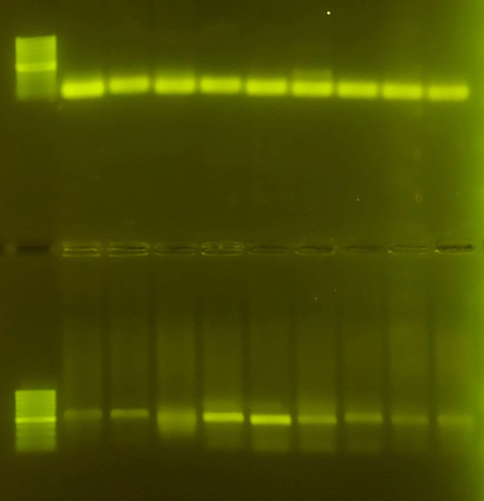
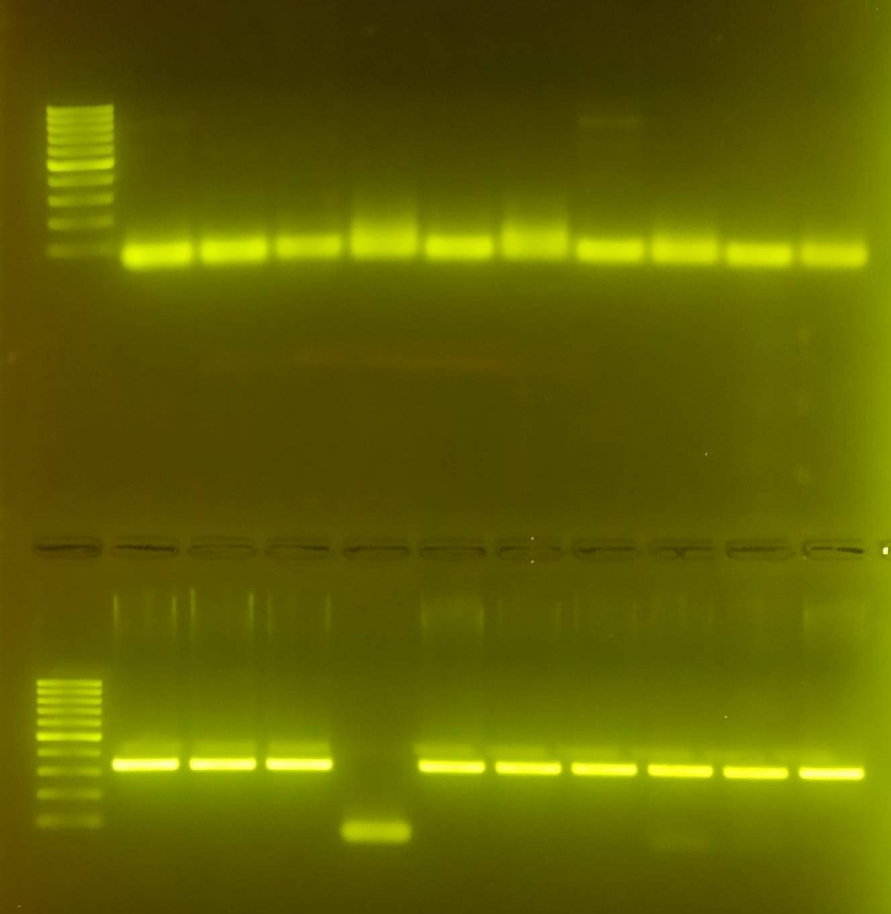

from 2026-02-09 to 2026-06-26
flipped RedDM and cellfate crosses
sorted flies from RedDM and cellfate pupae
put luc-RNAi 15 females and glo1-OE ? females at 29°C
trained at adult gut dissection
read a bit of bibliography
Flies at +29°C (luc-RNAi, GLO1-OE, cellfate) were flipped and put back at +29°C.
RedDM and cellfate lines (2) were sorted and put in new holidic tubes at +18°C.
Crosses were made with around 20-25 virgins of the driver and 10-12 males of the other line:
Esg-Gal4, UAS-GFP / CyO ; Tub-Gal80ts, UAS-RFP / Tm6b >
OregonR
Esg-Gal4, UAS-GFP / CyO ; Tub-Gal80ts, UAS-RFP / Tm6b > smo-RNAi
(#27037)
Esg-Gal4, UAS-GFP / CyO ; Tub-Gal80ts, UAS-RFP / Tm6b > UAS-smo
(#44622)
Esg-Gal4, UAS-GFP / CyO ; Tub-Gal80ts, UAS-RFP / Tm6b >
PWP1-RNAi
Esg-Gal4, UAS-GFP / CyO ; Tub-Gal80ts, UAS-RFP / Tm6b > UAS-PWP1
Crosses were made with around 20-25 virgins of the driver and 10-12 males of the other line:
Esg F/O > ptc-lacZ / CyO ; PWP1-RNAi / (Tm2)
Esg F/O > ptc-lacZ / CyO ; Luc-RNAi / (Tm2)
Virgin sorting of esgF/O at around 14h30 and IF / CyO, GFP ; Bm×Δ2B / Tm3, GFP. For the esgF/O, flies were put back at +18°C. For the latter, non-virgin flies were put back in 2 new tubes at room temperature.
Day 1
Day 2
Few days prior to imaging
Example primary antibodies
Dilute secondary antibodies 1:1000
With samples that don’t need antibodies, skip steps 4-8.
Dissection of Luc-RNAi and GLO1-OE lines that were at +29°C, respectively 12 and ~10 guts. They were put in PFA for 2 hours. Preparation of 1% BSA in PBT: 0.5164 g of BSA and 5,100 µL of PBT (PBS + 0.1% Triton X -100). This was in fact 10% BSA in PBT so the proper one was made with 0.0390 g of BSA and 5,000 µL of PBT. The rest of the protocol for the day was followed correctly. Incubation was done with 1:1000 anti-prospero (1 µL anti-prospero antibody with 1 mL BSA 1%) overnight at +4°C.
RedDM (RedDM > OregonR and RedDM > PWP1-RNAi) flies at +29°C (put there the 2026-02-13) were flipped in new holidic tubes.
New redDM pupae were collected in holidic tubes ((6)th, collected on 2026-01-30), one for each (OregonR and PWP1-RNAi) and put at +18°C as a backup for the RedDM put today at +29°C. The rest of the tubes were trashed ((6)th after use, (7)th and (8)th) aswell as flies sorted on 2026-02-16.
Following of the staining along the protocol, 1 µL of anti-mouse antibodies at 568 nm in 1mL of 1% BSA in PBT prepared the previous day. Rinses were done with 200 µL while the washings were done with 400 µL. Finally, after a 4 hour wash, guts were put in 30 µL of Vectashield + DAPI at +4°C.
As there was a lot of flies for the double balancer (If / CyO ; Sb / Tm6b), tubes were emptied at 14h. Flies were put in new tubes while the old tubes were kept for virgin collecting tomorrow.
RedDM flies in holidic tubes where pupae had been transfered on 2026-02-17 were put in new holidic tubes without sorting them.
11h20 - Around 120 virgins of If / CyO ; Sb / Tm6b were collected and put at +18°C.
RedDM (RedDM > OregonR and RedDM > PWP1-RNAi) at +29°C were flipped in new holidic tubes and put back at +29°C.
9h50 - There are 6 males of pfk-RNAi (+ / + ; pfk-RNAi / pfk-RNAi) and 10 males of zw-RNAi (+ / + ; zw-RNAi / zw-RNAi). Therefore, the following crosses were realised with virgins from the collection of yesterday:
1 tube: (20 virgin females) If / CyO ; Sb /
Tm6b × (6 males) + / + ; pfk-RNAi / pfk-RNAi
2 tubes: (19 virgin females) If / CyO ; Sb /
Tm6b × (5 males) + / + ; zw-RNAi / zw-RNAi
The tubes were then put at +18°C while the females of the original pfk-RNAi and zw-RNAi tubes were put back in their respective tubes and also stored at +18°C
The step 4 is wrong, see here.
Dissection of RedDM > OregonR and RedDM > PWP1-RNAi flies along the protocol (without antibodies). Fixation of guts in 100 µL PFA. 3× rinces and wash in PBT, wash of 3h15 (shaking). Guts were finally put in 30 µL of Vectashield + DAPI at +4°C.
RedDM > OregonR and RedDM > PWP1-RNAi unsorted backup tubes at +18°C were flipped and put back at +18°C. Crosses for RedDM and esgF/O (see 2026-02-16) were flipped ((2) tubes) and the original tubes were hydrated. Everything was put back at +18°C. Two cellfate (cellfate #356 > OregonR and cellfate #356 > Raptor-RNAi) tubes were flipped ((6) tubes), original hydrated and everything put back at +18°C.
Males of the crosses realised on 2026-02-20 were taken from their tubes (5-6 flies per tube) and put with new virgins (18-19 flies per tube) effectively redoing and doubling the crosses of 2026-02-20. These new tubes were labelled with a (1)’. Females of the (1) tubes were put back in their original tubes. All tubes were stored at +25°C.
Two y , w ; ptc-LacZ ; + tubes were flipped, original tubes were hydrated and put at +25°C while new tubes were put back at +18°C.
Pupae of two (4) tubes of cellfate #356 (OregonR and Raptor-RNAi) flies were transfered on holidic medium. Everything was put back at +18°C
One male of the 4.th cross (UAS-PROS-HA_site_I / If ; CtBPk106438 / Sb) and 10 virgins (If / Cyo, GFP ; bm×Δ2B / Tm3, Sb, Ser, Iwi-GFP) were put together. Crosses already (step 2) made were flipped from the (1) to (2). Original tubes (step 1) were flipped from the (II) to (III). Virgins (If / Cyo, GFP ; bm×Δ2B / Tm3, Sb, Ser, Iwi-GFP) were flipped and put back at +18°C Tubes that needed it were hydrated. Everything except the virgins was put back at +25°C.
1.st
step 1 male UAS-PROSwt-HA / If ; + / Sb × female w-
; + / CyO ; CtBPk106438 / Tm6b
collect male UAS-PROS-HA / CyO ; CtBPk106438 / Sb
step 2 and × female If / CyO, GFP ; bm×Δ2B / Tm3, Sb, Ser,
Twi-GFP
stock of UAS-PROSwt-HA / CyO, GFP ; CtBPk106438 / Tm3, Sb,
Ser, Twi-GFP
2.a.nd
step 1 male w- ; + / If ; CtBPk106438 / Tm6b × female
UAS-PROS-HA_site_I_siteIII / CyO ; + / Sb
collect male UAS-PROS-HA_site_I_site_III / If ; CtBPk106438 / Sb
step 2 and × female If / CyO, GFP ; bm×Δ2B / Tm3, Sb, Ser,
Twi-GFP
stock of UAS-PROS-HA_siteI_siteIII / CyO, GFP ; CtBPk106438 / Tm3, Sb,
Ser, Twi-GFP
2.b.nd
step 1 male w- ; + / Sb ; CtBPk106438 / Tm6b × female
UAS-PROS-HA_site_I_siteIII / CyO ; + / Tm6b
collect male UAS-PROS-HA_site_I_site_III / If ; CtBPk106438 / Tm6b
step 2 and × female If / CyO, GFP ; bm×Δ2B / Tm3, Sb, Ser,
Twi-GFP
stock of UAS-PROS-HA_siteI_siteIII / CyO, GFP ; CtBPk106438 / Tm3, Sb,
Ser, Twi-GFP
3.a.rd
step 1 male w- ; + / If ; CtBPk106438 / Sb × female
UAS-PROS-HA_siteIII / CyO ; + / Tm6b
collect male UAS-PROS-HA_siteIII / If ; CtBPk106438 / Tm6b
step 2 and × female If / CyO, GFP ; bm×Δ2B / Tm3, Sb, Ser,
Twi-GFP
stock of UAS-PROS-HA_siteIII / CyO ; CtBPk106438 / Tm3, Sb, Ser,
Twi-GFP
4.th
step 1 male w- ; + / If ; CtBPk106438 / Tm6b × female
UAS-PROS-HA_siteI / CyO ; + / Sb
collect male UAS-PROS-HA_siteI / If ; CtBPk106438 / Sb
step 2 and × female If / CyO, GFP ; bm×Δ2B / Tm3, Sb, Ser,
Twi-GFP
stock of UAS-PROS-HA_siteI / CyO, GFP ; CtPBk106438 / Tm3, Sb, Ser,
Twi-GFP
In reality, the double balancer used for the step 2 is If / CyO, GFP ; bm×Δ2B / Tm3, GFP
Guts (RedDM > OregonR, RedDM > PWP1-RNAi and RedDM > PWP1-oe of the date) were cleaned and stiching was launch for the night.
One male from the 4.th cross (UAS-PROS-HA_site_I / If ; CtBPk106438 / Sb) was put with the virgins (If / Cyo, GFP ; bm×Δ2B / Tm3, Sb, Ser, Iwi-GFP) and the male of the (1)’ tube made yesterday.
Cellfate #356 OregonR and Raptor-RNAi flies from pupae were flipped. The OregonR were also sorted (21 females but no males) but not the Raptor-RNAi. Everything was put back at +18°C.
(1) tubes from the combination were flipped, (1) and (2) tubes were put back at +25°C.
If / CyO ; Sb / Tm6b × pfk-RNAi and If / CyO ; Sb / Tm6b × zw-RNAi tubes were flipped from the (1)’ to (2)’. RedDM and EsgF/O crosses tubes were flipped from the (2) to (3). Everything was put back at +25°C. Cellfate #356 > OregonR and > Raptor-RNAi holidic tubes were flipped. New flies were sorted, 18 OregonR females without males and 21 Raptor-RNAi females with few males. Everything was put back at +18°C.
6 ptc-lacZ were collected.
2 more ptc-lacZ were collected (around 9h45) and added to the tube of yesterday. Collection was also done in the afternoon (15h), 12 virgins were added (20 total). The two tubes of ptc-lacZ from which virgins were collected were at +25°C during the day and were then transfered at +18°C.
(III) tubes were flipped into (IV) except for the 1.st and 4.th which did not had enough larvea/pupae in the (III). (2) tubes of the step 2 of the crosses were flipped into (3) for all except 3.a.rd which is not producing the males we want. 2 males were collected from 4.th (I) and (II), added with flies of 4.th (1)’ and 2 virgins (If / Cyo, GFP ; bm×Δ2B / Tm3, Sb, Ser, Twi-GFP) to make (2)‘. 2 males were collected from 1.st (UAS-PROS-HA / CyO ; CtBPk106438 / Sb) (I), put with 10 virgins (If / Cyo, GFP ; bm×Δ2B / Tm3, Sb, Ser, Twi-GFP) to make (1)’.
The stocks at +18°C received their monthly flip and were put back at +18°C.
2 males of the 4.thcross were found and put in the tube (2)’ of the step 2. Tubes were put back at +25°C.
5 ptc-lacZ virgins were found and added to the tube. The tube of virgins was stored at +18°C while the original tubes were stored at +25°C until afternoon collection. In the afternoon 5 more virgins were added bringing the total to 29 (one died). Original tubes were stored at +18°C.
The following cross was realised in 2 tubes, 7 males and 14-15 virgins for each.
(male) Tsc1-RNAi / CyO ; Sb / Tm6b × (female) y, w ; ptc-lacZ / CyO ; + / +
These tubes were stored at +25°C.
Crosses recombination Tsc1-RNAi (VDRC#110811) + ptc-lacZ (Bl#10514) + combination with PWP1-RNAi
A. (female) ptc-lacZ / CyO ; + / + × (male) Tsc1-RNAi / CyO ; Sb / Tm6b (from Terhi)
B. (female) ptc-lacZ / Tsc1-RNAi ; + / Tm6b × (male) If / CyO ; Sb / Tm6b
C. 4-5 (females) If/ CyO ; Sb / Tm6b × 1 (male) ptc-lacZ, Tsc1-RNAi / CyO ; Sb / Tm6b 1
D. (female) × (male) ptc-lacZ, Tsc1-RNAi / CyO ; Sb / Tm6b keep in stock
D’. (female) ptc-lacZ, Tsc1-RNAi / CyO ; Sb / Tm6b × (male) Bl / CyO ; PWP1-RNAi / (Tm2)
E’. (female) × (male) ptc-lacZ, Tsc1-RNAi / CyO ; PWP1-RNAi / Tm6b keep in stock
1 Single-male crosses: Leave at +25 for 2-4 days and check for eggs. Then gDNA extraction from the males + PCR UAS and lacZ primers.
(1) tubes of the step 1 of the pfk/zw cross started hatching in the +25°C. As such, virgins females and males were collected both in the morning and in the afternoon:
These (1) tubes were stored at +18°C with the tube of the virgins.
Three virgin females ptc-LacZ in the morning and 14 more in the afternoon were collected and added equally to the two tubes already made.
(1) and (1)’ tubes of the step 1 of the pfk/zw cross were sorted for the next step. Tubes were left at room tempereature for an afternoon collection. Flies collected:
pfk/zw cross (2) tubes were flipped into (3).
Pupae from (1) tubes of RedDM, esgF/O were transfered in holidic tubes and stored at +18°C
Virgin females and males were collected from pfk/zw cross on morning and afternoon, and added to the previously collected virgins.
pfk/zw were flipped from (2)’ to (3)’. RedDM, esgF/O were flipped from (3) to (4).
Males were collected for the step 2 of the cross:
After few Heini shenanigans on If / CyO, GFP ; bm×Δ2B / Tm3, Sb, Ser, Twi-GFP flies to empty the tubes and use them to collect virgins; 15 female virgins were collected today. These females were put with the 3 males UAS-PROS-HA_siteIII / If ; CtBPk106438 / Tm6b from above to make the tube (1) of step 2 of cross 3.a.rd.
Dana’s crosses were flipped from (3) ito (4) except 3.a.rd, (2)’ into (3)’ of 4.th and (1)’ into (2)’ of 1.st for the step 2, (IV) tio (V) except 2.a.nd and 1.st for the step 1.
Virgin females and males were collected from pfk/zw cross on morning and added to the previously collected virgins.
The rest was put back at +18°C.
All females + / CyO ; zw-RNAi / Tm6b (26 counting the ones who died) were used for crossing for step 4 of the cross. 13 females and 5 males of each genotype were used to make 2 big tubes put at +25°C.
20260202 and 20260209 sets were filtered with thresholds of:
for 20260202.
for 20260209.
Males were collected for the step 2 of the cross:
Flies of the step 2 were also collected to make the final stock:
24 virgin If / CyO, GFP ; bm×Δ2B / Tm3, Sb, Ser, Twi-GFP females were also collected.
Virgin females and males were collected from pfk/zw cross and added to the previously collected virgins.
Tubes from the cross were flipped from (1) to (2). All tubes were put back at +25°C.
Flies were transfered in holidic tubes from the pupae tubes without sorting.
Males were collected for the step 2 of the cross:
Flies of the step 2 were also collected to make the final stock:
20 virgin If / CyO, GFP ; bm×Δ2B / Tm3, Sb, Ser, Twi-GFP females were also collected.
Virgin females and males were collected from pfk/zw cross and added to the previously collected virgins.
Males were collected for the step 2 of the cross:
23 virgin If / CyO, GFP ; bm×Δ2B / Tm3, Sb, Ser, Twi-GFP females were also collected.
Virgin females and males were collected from pfk/zw cross and added to the previously collected virgins.
All 9 females + / CyO ; pfk-RNAi / Tm6b were crossed with 4 males UAS-SoNar / CyO ; Sb / Tm6b, put in a big tube then at +25°C. Non-used soNar flies were put back in their original tube, at +18°C. All 13 females + / CyO ; zw-RNAi / Tm6b were crossed with 5 males + / If ; zw-RNAi / Tm6b, put in a big tube then at +25°C.
Holidic tubes from the 2026-03-11 were flipped then stored back at +18°C.
Pupae from (2) tubes of RedDM, esgF/O were transfered in holidic tubes and stored at +18°C.
Virgin females and males were collected from pfk/zw cross and added to the previously collected virgins.
The females + / CyO ; zw-RNAi / Tm6b were added to the tube were the cross with males + / If ; zw-RNAi / Tm6b was already made, step 3.
Tubes storing males and females were flipped.
Males were collected for the step 2 of the cross:
The cross of the step 2 was then made using all males and virgins If / CyO, GFP ; bm×Δ2B / Tm3, Sb, Ser, Twi-GFP:
These four big tubes were put at +25°C while their parents of step 1 were put at +18°C.
Flies of the step 2 were also collected to make the final stock:
Note: The virgin female previously collected for the 1.st died.
EsgF/O flies were transfered from pupae (1). They were sorted against CyO and (Tm2):
Pupae (1) were then trashed.
From flies already transfered were kept only RedDM > smo, oregonR. Because there was not a lot of flies, the oldest from the pupae (2) were added. RedDM > smo, oregonR were sorted against CyO and Tm6b:
All these tubes were put at +18°C.
3.a.rd of step 2 was flipped from (1) to (2) even though it seems sterile. Holidic tubes from the 2026-03-13 were flipped (RedDM > smo, oregonR). pfk/zw cross (3) tubes from 2026-03-06 were flipped into (4).
From Dana’s crosses, step 2 (4) were flipped into (5) for 1.st, 2.a.nd and 4.th and additionally (2)’ into (3)’ of 1.st and (3)’ into (4)’ of 4.th. Step 1 (V) were flipped into (VI) for 2.b.nd, 3.a.rd and 4.th. From Tsc1-RNAi + PWP1-RNAi + ptc-lacZ, tubes at +25°C were flipped from (2) to (3). (1) tubes from step 4 of Dana’s crosses - Combination were flipped into (2).
Virgin females and males were collected from pfk/zw cross and added to the previously collected virgins.
The females + / CyO ; zw-RNAi / Tm6b were added to the tube were the cross with males + / If ; zw-RNAi / Tm6b was already made, step 3, 5 males were also added. The females + / CyO ; pfk-RNAi / Tm6b were added to the tube were the cross with UAS-SoNar / CyO ; Sb / Tm6b was already made, step 4, 2 males were also added. These tubes were put back at +25°C while the other were put back at +18°C.
The (1) and (1)’ tubes of zw were trashed as we will not need as much fly for now normally.
Virgin females ptc-lacZ / Tsc1-RNAi ; + / Tm6b were collected for the step B: 2. These females and the (1) tubes were put at +18°C while the rest ((2) and (3)) were put back at +25°C.
The RedDM OregonR and smo were put at +29°C.
3 virgin females + / CyO ; pfk-RNAi / Tm6b from pfk were collected. They were then added to the tube of the step 4 of the cross.
1 virgin female ptc-lacZ / Tsc1-RNAi ; + / Tm6b was collected for the step B.
Flies from pupae (2) were transfered in holidic tubes stored at +18°C without sorting for RedDM. Flies from pupae (2) EsgF/O > ptc-lacZ / CyO ; PWP1-RNAi / (Tm2) were trashed. Flies from pupae (2) Esg F/O > ptc-lacZ / CyO ; Luc-RNAi / (Tm2) were sorted against Cyo and Tm2. 6 females and 2 males were added to the corresponding tube as it had only few females.
5 virgin females + / CyO ; pfk-RNAi / Tm6b from pfk were collected and stored at +18°C.
Flies from pupae (2) were transfered in holidic tubes stored at +18°C without sorting for RedDM.
Holidic tubes at +29°C were flipped and put back at +29°C.
No final stock flies were collected but:
4 virgin females + / CyO ; pfk-RNAi / Tm6b from pfk were collected and added to the ones of yesterday. All of these females, 9 in total, were put with 5 males + / If ; pfk-RNAi / Tm6b in a big tube at +25°C to make the step 2 of the cross. pfk/zw (1) tubes were flipped.
Flies previously transfered for RedDM on 2026-03-18 and on 2026-03-19 were trashed. Pupae for (3) tubes of RedDM were transfered in holidic tubes and stored at +18°C. EsgF/O flies were flipped then transfered at +29°C. EsgF/O crosses were trashed except for Esg F/O > ptc-lacZ / CyO ; Luc-RNAi / (Tm2) (3). RedDM (4) were flipped into (5). EsgF/O flies from pupae (2) were transfered and sorted against CyO and (Tm2):
Tsc1-RNAi + PWP1-RNAi + ptc-lacZ (2) tubes as well as pfk/zw crosses (1) tubes realised on the 2026-03-13 were put at +18°C
Previous filtering was redone with these values:
for 20260202.
for 20260209.
Additionally, filtering was realised for 20250218esgFO-boiPWP1_young:
6 virgin female ptc-lacZ / Tsc1-RNAi ; + / Tm6b was collected for the step B. With the females collected previously (7 counting the one who died) and 4 males If / CyO ; Sb / Tm6b, the cross of step B was realised. The tube was put at +25°C.
Final stock flies were collected for zw SoNar and zw iNap1 respectively:
These were put in a big tube for each genotype and at +18°C. (1) tubes realised on 2026-03-13 were transferred at +18°C.
Flies from pupae (2) EsgF/O were sorted against CyO and (Tm2), 4 females for Luc-RNAi and 2 for PWP1-RNAi, then added to the respective tubes which were flipped. 2 males were additionally added to Luc-RNAi tube. Pupae (2) were then trashed. EsgF/O flies at +29°C were flipped and put back at +29°C.
RedDM flies from pupae (2) and (3) were transferred without sorting in holidic tubes except for OregonR which was sorted against CyO: 17 females and 5 males.
3.a.rd (2) was flipped into (3). Tubes (1)’’ for Dana’s crosses were flipped into (2)’’ and also put at +25°C. Tsc1-RNAi + PWP1-RNAi + ptc-lacZ (3) tube was flipped into (4), (3) and (4) tubes were transferred at +18°C. (2) tubes from step 4 of Dana’s crosses - Combination were flipped into (3).
Dissection of RedDM flies along the protocol (without antibodies). Fixation of guts in 60 µL PFA. 3× rinces and wash in PBT, wash of 3h15 (shaking). Guts were finally put in 30 µL of Vectashield + DAPI at +4°C.
5 virgin female ptc-lacZ / Tsc1-RNAi ; + / Tm6b was collected for the step B. These flies were added to tube made yesterday.
It turns out that the step 4 of the cross is wrong, the females need to be If / CyO ; pfk-RNAi / Tm6b instead of + / CyO ; pfk-RNAi / Tm6b. With this in mind, all step 4 and final stock already collected were trashed which leaves us with one tube of If / CyO ; pfk-RNAi / Tm6b and tubes of If / CyO ; zw-RNAi / Tm6b.
1 virgin female + / CyO ; pfk-RNAi / Tm6b was collected and added to the previous tube.
RedDM flies were transfered from pupae (2) and (3) without sorting.
4.th (4)’ was flipped into (5)’. 1.st (5) was flipped into (6). 2.b.nd (5) was flipped into (6).
Based on the previous filtering, an additional one was done without replacing the original with values specific for the GFP of the over-expressing condition (rest left unchanged):
Filtering for 20250218esgFO-boiPWP1_young that was done last time was also done with the same values but only for the END part.
From the EsgF/O tube that survived the trash, flies were transfered in a holidic tube and pupae in a starvation tube.
EsgF/O tubes were flipped and transfered at +29°C.
Sorting RedDM against CyO and Tm6b:
Last, previous and before dissections were mounted.
1 male and 1 female from the zw/zw tube (1) were collected and put together in a big tube at +25°C for the step 3 of the cross.
Dissection along the protocol of EsgF/O flies. 10mL of 1% BSA in PBT prepared with 10 mL of PBT and 103.3 mg of BSA. Antibodies prepared in 800 µL 1% BSA in PBT, 400 for each genotype:
2 virgin females were found and added to in the previous tube.
1 virgin female collected from (1) and (2) and was added in the previous tube.
RedDM > OregonR, PWP1 were transfered at +29°C.
Flies from pupae tube were transfered in a starvation tube.
Following of the dissection of yesterday. Secondary antibodies prepared in 800 µL 1% BSA in PBT, 400 for each genotype:
30 µL vectashield with DAPI at +4°C.
1 female 3.a.rd was collected from the newly made (1)’’ tubes.
Transfer of flies in holidic tube in a starvation tube without sorting. Sorting of the others against CyO and (Tm2): 5 females and 3 males.
2 virgin females collected for the step B and added to the previous tube. 5 males were also added to this tube.
Transfer of flies from pupae (3) in holidic tubes without sorting. Flipping of RedDM (5) into (6). Pupae transfer of (4) tubes of RedDM.
From simon’s hardrive … see small paper/note until I am not lazy to add it here:
But anyway impossible to do the rest…
2 virgin females for the step 3 of the cross were collected from previous step tube and added to the already existing tube.
1 male 4.th was collected for the final step of the cross and put in a small tube at +18°C. 1 female 4.th was also collected but without being sure that she was virgin, she was put in a separate tube for the moment. (2)’’ tubes were flipped into (3)’‘, (2)’’ put at +18°C and (3)’’ at +25°C.
Tube (1) was flipped into (2). (1) was put at +18°C while (2) was put at +25°C. From tubes of 2026-03-11 and 2026-03-17 1 virgin female was collected for the step B and added to the (2) tube made today.
Transfer and sorting against Cyo and (Tm2) from pupae in a starvation tube: 2 females and 1 male.
Flies were sorted against CyO and Tm6b from pupae (3) and (4). These flies were put at +18°C in holidic tubes:
Filtering was redone for Simon’s hardrive but it worked this time… voodoo is a powerful thing…
Mission aborted, I repeat mission aborted, everything trashed!
1 virgin female for the step 3 of the cross was collected from previous step tube and added to the already existing tube.
1 male 4.th and 1 virgin female 1.st were collected for the final step of the cross and put in a small tube at +18°C or added to the previous one. 1 female 4.th was also collected but without being sure that she was virgin, she was put in a separate tube for the moment. This female and the one of yesterday were put at +25°C. 3.a.rd (3) was flipped into (4).
Flies were sorted against CyO and Tm6b from pupae (3) and (4). These flies were added to the tubes of yesterday:
Pupae (3) were then trashed. UAS-PWP1 and PWP1-RNAi tubes were trashed. Transfered flies were trashed.
Dissection along the protocol of EsgFO flies in PBS with anti-proteases and anti-phosphatases (1 pastille of each for 10 mL of PBS). 10mL of 1% BSA in PBT prepared with 10 mL of PBT and 102.6 mg of BSA. Antibodies prepared in 800 µL 1% BSA in PBT, 400 µL for each genotype:
From tubes of 2026-03-11 and 2026-03-17 1 virgin female was collected for the step B and added to the (2) tube.
1 male and 1 virgin female 3.a.rd were collected for the final step of the cross and added to the previous one that was collected.
Dissection of Reddm > PWP1 flies along the protocol. No antibody staining so skipping of steps 4-8. Stored at +4°C in DAPI + vectashield after a wash of 3 hours.
Following of the dissection of yesterday. Secondary antibodies prepared in 800 µL 1% BSA in PBT, 400 for each genotype:
30 µL vectashield with DAPI at +4°C after a wash of 3 hours.
1 male If / CyO ; zw-RNAi / Tm6b from the previous step of the cross was added in the tube. pfk and zw step (2) and (3) respectively were flipped into (3) and (4).
1 male 4.th for the final step of the cross was added to the tube. The 4.th female was in fact a virgin and was put in the finale stock tube flipped today. The other 4.th female was put at +18°C.
RedDM > smo were flipped and transfered at +29°C. Pupae (4) were emptied. Pupae of tubes (5) were transfered in holidic tubes but the original tubes were not trashed. (6) RedDM tubes were flipped into (7).
2 females 1.st collected from this tube and this tube for the final step of the cross were collected. Without being sure that they are virgins, each of them were put in a small tube at +25°C. The previously collected female 4.th was in fact not a virgin and was trashed. The one put in the final stock tube died. (3)’’ flies were flipped into (4)’’, the previous tubes put at +18°C and the new ones at +25°C.
(2) tube was flipped into (3), the previous one put at +18°C and the new one at +25°C.
From this and this, 3 males were collected for the step 3 of zw and put in the previous tube. 1 male pfk from this tube was collected also for the step 3 and put in a small tube at +18°C.
From pupae (4), flies UAS-smo-act and smo-RNAi were transfered without sorting. Sorting against CyO and Tm6b:
Holidic tubes put at +18°C.
Flies at +29°C were flipped and put back at +29°C. It has to be noted that the medium was very mushy as there was a lot of larvea and some flies were stuck inside and therefore had to be pulled out by using the tweezers.
The Great Flipping Day happened, stocks are calmed down for a month once again.
Step 2 of 1.st (4), (3) and (2)’, 2.b.nd (4) and (3) and 4.th (3) and (2)’ were trashed. For the final step of the cross:
1 virgin female zw was collected from this tube and put in the already existing tube.
From pupae (4) and (5), flies UAS-smo-act and smo-RNAi were transfered without sorting. Sorting against CyO and Tm6b:
Holidic tubes put at +18°C.
Dissection of RedDM > smo flies along the protocol. No antibody staining so skipping of steps 4-8. Stored at +4°C in DAPI + vectashield after a wash of 3 hours.
For the final step of the cross:
3 virgin If / CyO ; zw-RNAi / zw-RNAi or If / CyO ; zw-RNAi / Tm6b females from (1) and (2) tubes were collected and put in a small tube. Step 2 (3) pfk and (4) zw were respectively flipped into (4) and (5), big tubes at +18°C. Step 3 of the zw part of the cross was put at +25°C.
Pupae (4) were trashed. From pupae (5) smo-RNAi flies were transfered without filtering. Sorting against CyO and Tm6b:
(4) tubes of step A were flipped into (5). The other tubes of this step were trashed.
From pupae (5) smo-RNAi flies were transfered without filtering. Sorting against CyO and Tm6b:
There are not enough flies collected over the course of the previous days so no dissection will be scheduled and we will we instead use the pupae (5) + (6) (see below).
From tubes (5) and (6), pupae were transfered into holidic tubes, original tubes were then trashed. (7) RedDM were flipped into (8).
1 female 2.b.nd for the final step of the cross was collected but without being certain she was virgin she was put in a small tube at +25°C. The two females were in fact virgin and were put in the tube with the others. The final stock for 2.a.nd was trashed as the only flie died.
2 flies If / CyO ; zw-RNAi / zw-RNAi or If / CyO ; zw-RNAi / Tm6b were collected and put in the tube.
Dana’s sensors were flipped as well as the flies from the other lab. 2 inap tubes were flipped along the process.
2.b.nd (3), 4.th (3)’ and 3.a.rd (1) were trashed. 1 male 2.b.nd was collected and added with the previously collected flies of the final stock.
From tubes (1), (2) and (3), 1 male zw was collected and added to this tube.
The male pfk in a small tube was flipped.
Everything that was collected the previous week was trashed. Flies were collected from pupae (5) and (6), only a transfert for smo, and sorting against CyO and Tm6b for:
40 If / CyO ; Sb / Tm6b virgin females were collected starting at 11h in preparation for the step C of the cross.
27 If / CyO ; Sb / Tm6b virgin females were collected and added to the tube made yesterday.
Flies collected for the final stock:
The female 2.b.nd was in fact a virgin and was added to the stock. The 1.st is only composed of females and it is a worrying situation, as such it was decided to cross the females with 2 males If / CyO, GFP ; Bm×Δ2B / Wm3, GFP, Twi-GFP and do an other sorting after this cross. 3.a.rd was flipped to prevent the bacterial growth to also affect the parents.
(4)’’ flies were flipped into (5)’‘, the previous tubes put at +18°C and the new ones at +25°C. This applies only to 2.b.nd and 3.a.rd as 1.st and 4.th (4)’’ tubes had no adult flies.
(3) tube was flipped into (4), the previous one put at +18°C and the new one at +25°C.
Flies were collected from pupae (5) and (6), only a transfert for smo, and sorting against CyO and Tm6b for:
Holidic tubes put at +18°C.
Guts RedDM > OregonR, PWP1-RNAi were imaged, the stiching was launched in the afternoon.
Flies collected for the final stock:
4.th (1) final stock and 1.th (1) final stock were flipped into (2).
A paste was made by mixing water and yeast and briefly boiling it in the microwave. A small spot of this paste was put in the tubes 2.bnd (2) made today, 4.th (2) made today, 1.st (1) and 3.a.rd (2). All of this tubes were transfered at +25°C except for the maybe-virgin females.
1 male zw was collected and added to the step 3 of the previous stock. 3 females with Tm6b were collected without being sure they are virgin, they were then put at +25°C in individual tubes. 2 males pfk were collected and added to the temporary stock. 1 virgin female homozygous for pfk-RNAi was collected and put in her own tube at +18°C. 2 females with Tm6b were collected, again uncertain virginity and individual tubes at +25°C. Females stored for the moment were flipped in a new tube.
2 males ptc-lacZ, Tsc1-RNAi / CyO ; Sb / Tm6b were collected for the step C in a small tube at +18°C Flies for the previous steps of the cross were transfered at +25°C.
Flies were collected from pupae (6), only a transfert for smo, and sorting against CyO and Tm6b for:
Holidic tubes put at +18°C.
Flies collected for the final stock:
For zw:
For pfk:
Step 3 of the cross for zw (1) was flipped into (2).
1 male ptc-lacZ, Tsc1-RNAi / CyO ; Sb / Tm6b was collected for the step C and added to the stock.
Flies were collected from pupae (6), only a transfert for smo, and sorting against CyO and Tm6b for:
Holidic tubes put at +18°C.
For zw:
For pfk:
pfk virgin females collected (5 in total) — wether they were homozygous for pfk-RNAi or had Tm6b — were crossed with 3 males If / CyO ; pfk-RNAi / Tm6b in a small tube put at +25°C for the step 3. Non-used males were put in their tubes at +18°C.
Step 2 flies for pfk and zw (4) and (5) were respectively flipped into (5) and (6).
RedDM > OregonR, PWP1 flies collected previously this week (on the 13, 14, 15 and 16) were combined in a new holidic tube (one for each genotype) and transfered at +29°C. RedDM > smo flies were trashed.
Flies were collected from pupae (6), only a transfert for smo, and sorting against CyO and Tm6b for:
Holidic tubes put at +18°C.
Final stocks (2) (and the (1) cross made with 1.st) from the 2026-04-15 were flipped in new (3) small tubes (and (2) for 1.st) put at +25°C. The yeast paste in the previous tubes was not removed and none was applied in the new tubes.
Flies collected for the final stock:
The two females of the 15 were virgin and added to the (3). 3.a.rd (3) was flipped into (4).
For zw:
For pfk:
3 males ptc-lacZ, Tsc1-RNAi / CyO ; Sb / Tm6b were collected for the step C and added to the stock.
Flies were collected from pupae (6) and transfered without sorting. Holidic tubes put at +18°C. Flies at +29°C were flipped in new holidic tubes and put back at +29°C.
Flies collected for the final stock:
1.st (4)’, (5) and (6), 2.a. (2) and (5), 2.b.nd (5) and (6) and 3.a.rd (2) were trashed.
For zw:
1 male ptc-lacZ, Tsc1-RNAi / CyO ; Sb / Tm6b was collected for the step C and added to the stock. Tube (4) was flipped into a big tube (5) put at +25°C. Virgins collected previously were trashed and new ones were collected of the same genotype, 9 flies collected.
RedDM > smo-RNAi and UAS-smo were imaged.
The final stock of 3.a.rd is producing flies with incorrect phenotype. As such, flies were sorted for the correct one (see cross), 1 male was collected and put in a new small tube final2 at +25°C.
4.st (4)’ was trashed. 1 male for 4.st was collected for the final stock and put in the aforementioned stock.
For pfk:
As there were only 2 females remaining in the step B (5), 1 male If / CyO ; Sb / Tm6b was added.
New virgins were collected and added to the previously collected ones but after realising that the original tubes were not kept at +18°C all flies were trashed and a new tube was used. 11 virgins were eventually collected in the morning and 15 were added in the afternoon. The original tubes were put at +18°C.
67 virgins were added to the ones previously collected. Although no males with the correct phenotypes could be collected, it can be noted that one of them in the tube is dead bringing the total to 6 males.
Only one of the two step A (5) was in good shape, this one was flipped into (6) and put bask at +18°C, all other tubes for the step A were trashed.
Final stock 1.st (2), 2.b.nd (3), 3.a.nd (3) and 4.st (3) were flipped into (3) and (4) respectively.
With 3.a.rd issues: 1 female of the correct phenotype was collected but she was not a virgin, as such she was put in a small tube alone at +25°C. The first flies hatched from the generation 1 of 2.b.nd and 4.st do not seem to have this problem, we will keep watching. Final stocks were transfered at +18°C.
Step 3 first tube was flipped and the previous tube was trashed, other tubes put bask at +25°C. Step 4 tubes transfered at +18°C.
Everything was trashed.
Dissection of RedDM flies along the protocol (without antibodies). Fixation of guts in 100 µL PFA. 3× rinces and wash in PBT, wash of at least 3h30 (shaking). Guts were finally put in 30 µL of Vectashield + DAPI at +4°C.
The issue concerning 3.a.rd is not limited to this line but also the others of the cross. As such flies were sorted for the right phenotype and put in a tube final2. 1 additional male was added for 3.a.rd, 1 female (the correct flie from yesterday) for 4.st and 1 male (the correct flie from yesterday) for 2.b.nd.
No new male could be collected today so the step C was done with the 6 males and 5 females per male in a small tube. These tubes were put at +25°C.
Guts RedDM > OregonR and PWP1 were mounted on a slice and put back at +18°C.
In the process of cleaning the final stock into final2:
New flies were collected from the step 2 in order to make a final’ stock:
2 males were collected from the (4) tube and put in a small tube at +18°C.
Tubes for the step C were given a number from 1 to 6. The situation:
Virgins were taken from the previous stock.
Guts RedDM > OregonR and smo were mounted on a slice and put back at +18°C.
For the final stock:
No flies could be collected for final’.
Step 4 (2) zw tube flipped into (3), tubes put back at +18°C. Step 3 (2) pfk tube flipped into (3), tubes put back at +25°C.
Dana’s sensors were flipped as well as the flies from the other lab.
Virgins were flipped in a new tube. Step A (6) tube flippe into (7).
RedDM > OregonR was imaged.
For the final stock:
Nothing for final’.
1 male was collected for the step C and put in the stock.
Single males for the step C of the cross were taken for the squishing process:
Squishing buffer prepared on ice, 50 µL in milliQ water per flie:
Which gives for our stocks:
Males transfered in a PCR tubes on ice, 50 µL of squishing buffer per
tube.
“It’s squishing time”, and proceed to squish all over the place.
Then DNA extraction:
This result can be freezed at -20°C.
Then the PCR/gel was done.
Master mix for 25 µL total = 22 µL mix + 3 µL flie stew
With the addition of:
Temperatures:
1% agarose gel:
Ladder preparation:
In each sample add 2.5 µL Midori Green Direct (1:10).
Migration at 100 V.
Here is the obtained gel after 1h migration:

Upper part of the gel is with UAS primers, lower part with lacZ primers. Wells from left to right:
For the final stock:
re-crossed 1.st (3) and final 2.b.nd, 3.a.rd and 4.th (4) were flipped into, respectively, (4) and (5). Final2 stocks of 2.b.nd, 3.a.rd and 4.th were flipped from (1) to (2).
zw step 3 were transfered at +18°C as they are doing great. Step 2 flies for pfk and zw (5) and (6) were respectively flipped into (6) and (7).
1 male was collected for the step C and added to the stock. Tubes 1-6 were flipped from (1) to (2) and were transfered at +18°C.
For pfk, step 3 flies from (1) and (2) were put in a big tube at +25°C.
For zw, step 4 iNap1, 1 female was collected but without being sure she is a virgin she was put in a small tube at +25°C.
For the final stock:
Step 2 (3)’’ and (4)’’ were trashed.
The PCR/gel previously done with unsatisfactory results (no amplification in the top part and amplification of everything in the bottom part) was redone. Differences with last time:
Here is the obtained gel after 1h migration:

Upper part of the gel is with UAS primers, lower part with lacZ primers. Wells from left to right:
Step 3 already collected males were flipped in a new small tube as well as the virgins in a new big tube.
For the final stock:
First step 5 zw iNap1 were collected: 2 males and 1 virgin female put in a small tube at +25°C.
1 male was collected for the step C of the cross and put with the stock were collected: 2 males and 1 virgin female put in a small tube at +25°C.
1 male was collected for the step C of the cross and put with the stock.
Final2 (for 2.bnd, 3.a.rd and 4.th), final (for 1.st) and final’ tubes were transfered at +25°C.
The monthly flipping ceremony has been celebrated.
RedDM > PWP1 were imaged.